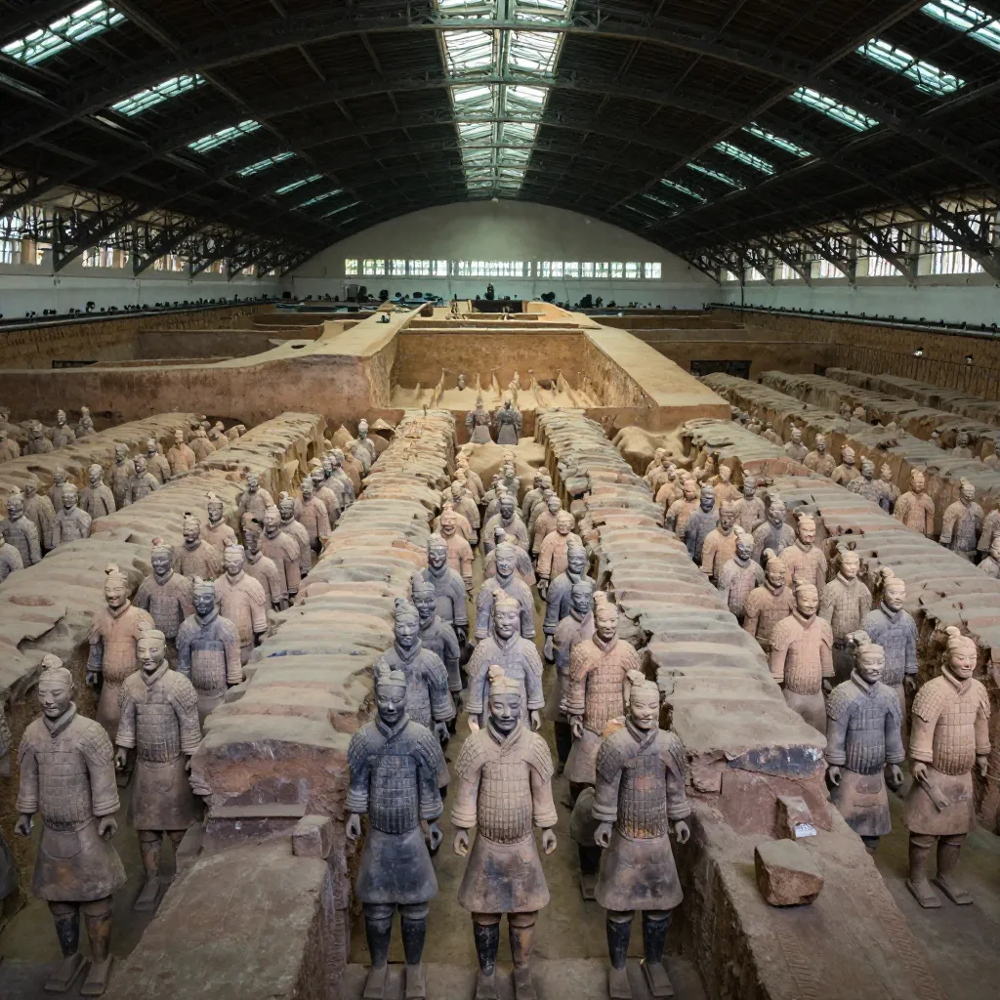
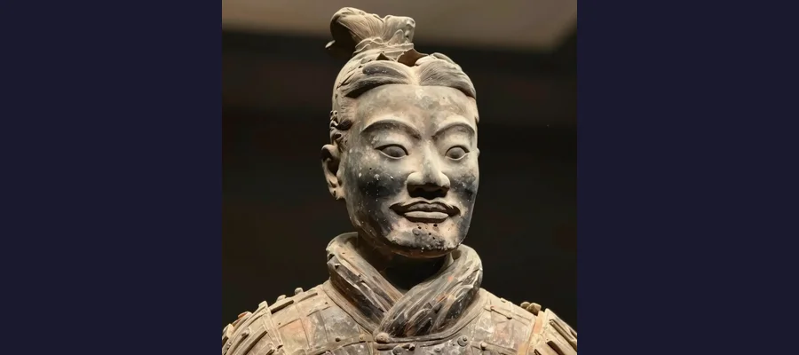

The Terracotta Army: 8,000 Silent Soldiers Guarding China's First Emperor

In 1974, farmers digging a well near Xi'an uncovered 8,000 life-sized terracotta warriors buried for over 2,200 years. Each has a unique face. The emperor's tomb remains sealed with mercury rivers inside.
In March 1974, a group of farmers in the Lintong District near Xi'an, China, set out to dig a well. They were tired, the land was dry, and they needed water for their crops. What they found instead was a fractured terracotta head staring up at them from the red earth — the face of a soldier who had waited 2,200 years to be found. The farmers had accidentally stumbled upon what is now regarded as one of the greatest archaeological discoveries of the 20th century: an underground army of approximately 8,000 life-sized terracotta soldiers, buried to protect China's first emperor in the afterlife.
The scale of the find was almost incomprehensible. Pit 1 alone, the first and largest of three excavated chambers, covers 14,260 square meters — roughly the area of two American football fields — and contains an estimated 6,000 warriors arranged in battle formation. Beyond the soldiers, archaeologists found hundreds of horses, over a hundred chariots, and tens of thousands of bronze weapons. And this was just the beginning. The Terracotta Army turned out to be only one component of a vast necropolis covering 56 square kilometers, at the heart of which lies the still-unexcavated tomb of Emperor Qin Shi Huang, a man who united China, standardized its writing and currency, built the first version of the Great Wall, and was so terrified of death that he spent the last decades of his life engineering an eternal kingdom underground.
The emperor got what he wanted, in a way. His name has survived for over two millennia. His underground palace remains sealed. And his army of clay soldiers still stands at attention, weapons ready, waiting for orders that will never come.
The Farmer, the Well, and the Discovery That Changed Archaeology
The discovery of the Terracotta Army reads like a parable about chance. On March 29, 1974, Yang Zhifa and several other villagers from Xiyang Village in Lintong County were digging a well approximately 1.5 kilometers east of the emperor's burial mound when their shovels struck something hard. They pulled out fragments of pottery — a head, a torso, pieces of limbs, and several bronze arrowheads. The farmers initially had no idea what they had found. Some thought the figures might be cult idols or even demons. They hauled the pieces home, used some as scrap material, and went back to digging.
Word of the strange discovery eventually reached Zhao Kangmin, a local archaeologist from the Lintong County Museum, who visited the site and immediately recognized the significance of the find. He assembled a team and began test excavations. What they uncovered was a vast subterranean chamber containing thousands of terracotta warriors in full battle formation — columns of infantry at the front, war chariots behind, cavalry on the flanks. The Chinese government quickly recognized the importance of the site and dispatched a full archaeological team. By 1976, a massive arched structure had been built over Pit 1 to protect the excavation, and on October 1, 1979, the Museum of the Terracotta Warriors and Horses of Qin Shihuang opened to the public.
- 🏺 The Terracotta Army was discovered on March 29, 1974 by farmers digging a well near Mount Li in Lintong District, Xi'an
- 🏔️ The burial complex covers approximately 56 square kilometers (22 square miles), making it one of the largest funerary complexes ever constructed
- 🏗️ Construction of the necropolis began in 246 BCE when Qin Shi Huang ascended the throne at age 13 and continued for 38 years
- 📖 Historical records indicate 700,000 laborers were conscripted to build the mausoleum complex
- 🌍 The site was designated a UNESCO World Heritage Site in 1987
👨🌾 The Farmer Who Became a Celebrity
Yang Zhifa, the farmer credited with discovering the Terracotta Army, lived long enough to see the site transform into one of China's most visited tourist attractions. For years, he sat at a signing table in the museum gift shop, autographing books for visitors. He reportedly received no financial reward for the discovery that brought billions of yuan in tourism revenue to the region. Yang passed away in 2018 at the age of 82.

Pit 1 alone contains an estimated 6,000 warriors arranged in battle formation across 14,260 square meters
The Emperor Who United China
To understand why an emperor would bury an entire army of clay soldiers, you have to understand the man who ordered it. Qin Shi Huang (259–210 BCE), born Ying Zheng, ascended the throne of the state of Qin at the age of 13. Through a series of brilliant and ruthless military campaigns, he conquered the six rival states of China and unified the country for the first time in 221 BCE, declaring himself the First Emperor.
His achievements were staggering and his cruelty equally so. He standardized weights, measures, currency, and the writing system across the empire. He ordered the construction of an extensive road network and early sections of the Great Wall of China. He also burned books he considered subversive, executed scholars who opposed him, and imposed brutal forced-labor policies that likely killed hundreds of thousands.
But Qin Shi Huang's defining obsession was death. He dispatched expeditions to search for mythical islands of immortals in the Eastern Sea. He consumed mercury-laden elixirs prepared by alchemists who promised eternal life — substances that almost certainly hastened his death. And he poured the resources of an entire empire into building a tomb complex so vast and elaborate that it has never been fully excavated, more than 2,200 years after his burial.
8,000 Faces and Not Two the Same: The Engineering Marvel
Perhaps the most astonishing feature of the Terracotta Army is not its scale but its individuality. Despite numbering in the thousands, no two warriors have identical faces. Each soldier has unique facial features — different nose shapes, cheekbone structures, eyebrow angles, and expressions. Some have high foreheads, others broad chins. Some appear young and eager, others weathered and grim. Chinese researchers have identified at least 10 distinct face molds that were modified by hand after the initial shaping, with artisans adding individualized details in clay before firing.
The figures are not crude effigies. They are remarkably detailed. Soldiers wear different hairstyles indicating rank and ethnicity. Armor plates are individually rendered, with rivets and laces clearly visible. Shoes have tread patterns on their soles. The level of anatomical detail extends to kneecaps, fingernails, and the veins on the backs of hands.
The construction process was itself an industrial marvel. Each warrior was built using an assembly-line method that anticipated modern mass production by two millennia. Bodies were formed from coiled clay around a central core. Heads, arms, and hands were cast separately in molds, then attached. Final details were sculpted by hand. The figures were then fired in massive kilns at temperatures exceeding 1,000°C, painted in vivid colors, and assembled in their underground positions. The entire process required an estimated 700,000 workers.
✨ The Ghost Army in Full Color
The Terracotta Army was not the drab, earth-toned collection we see today. When originally buried, every soldier was painted in bright lacquer colors — vibrant reds, greens, blues, purples, and pinks. The paint was applied over a layer of lacquer that bonded it to the fired clay. But when the warriors were exposed to the dry Xi'an air during excavation, the lacquer began to curl and flake within minutes, taking the pigment with it. Chinese and German conservators have since developed a technique using polyethylene glycol to stabilize the lacquer, but it must be applied within seconds of exposure. Many warriors photographed in the early days of excavation show bright color that faded completely within hours.

No two warriors have identical faces - artisans hand-modified each figure from base molds
The Three Pits: What Lies Beneath
The Terracotta Army is housed in three main excavation pits, numbered in the order of their discovery. Together they reveal a sophisticated military deployment that mirrors the organization of Qin Shi Huang's actual armies.
Pit 1: The Main Force
Pit 1 is by far the largest, measuring 230 meters long and 62 meters wide (approximately 750 by 203 feet). It contains an estimated 6,000 warriors arranged in a rectangular battle formation: vanguard infantry at the front, main body troops in 11 parallel corridors, and war chariots interspersed throughout. The corridors are paved with small bricks and were originally roofed with timber beams covered with reed mats and clay. When complete, the pit would have resembled a vast underground palace hallway.
Pit 2: The Cavalry and Specialists
Pit 2, discovered in 1976, covers approximately 6,000 square meters and contains a more diverse force: cavalry units with terracotta horses, charioteers, archers (both standing and kneeling), and infantry. The layout suggests a flexible tactical reserve, positioned to support the main force in Pit 1. Pit 2 has been only partially excavated, as archaeologists have learned from the pigment-fading problems encountered in Pit 1 and are proceeding more cautiously.
Pit 3: The Command Center
Pit 3 is the smallest, at roughly 520 square meters, and contains only about 68 warriors. Crucially, these figures were found arranged around a chariot in what appears to be a command post. The warriors in Pit 3 are all officers — no common infantry. The pit also contained deer antlers and animal bones, suggesting it served a ritual or sacrificial function as well as a military one. Most scholars interpret Pit 3 as the army's headquarters.
The Mystery of Pit 4
Archaeologists also identified a Pit 4, located between Pits 2 and 3. It was completely empty. The pit had been dug and prepared — the framework for the wooden roof was in place — but no figures were ever installed. The most likely explanation is that construction was abandoned when Qin Shi Huang died unexpectedly in 210 BCE at the age of 49, triggering a political crisis. Rebels attacked the necropolis, set fire to the wooden structures in the pits, and the unfinished Pit 4 was simply never completed. The empty chamber stands as a reminder that even an emperor who commanded 700,000 laborers could run out of time.
⚔️ Weapons Still Sharp After 2,200 Years
The Terracotta Army was buried fully armed with real bronze weapons — swords, spears, halberds, axes, and crossbow triggers. When excavators recovered swords from the pits, they found them still sharp enough to cut paper. Early reports attributed this to a chromium-based anti-rust coating, similar to modern chrome plating, suggesting the Qin Dynasty had discovered a technology not reinvented until the 20th century. However, a 2019 study published in the journal Scientific Reports challenged this claim, finding that the chromium came from the lacquer used in the wooden fittings of the weapons, not from a deliberate anti-corrosion treatment. The real reason for the swords' preservation appears to be the low-oxygen, stable environment of the sealed pits — not an ancient super-technology.
Beyond Soldiers: Acrobats, Musicians, and the Underground Court
The Terracotta Army, for all its fame, represents only a fraction of the underground world Qin Shi Huang created. Excavations in other pits around the tomb mound have revealed a surprisingly diverse population of non-military figures, suggesting the emperor intended to recreate not just an army but an entire court in the afterlife.
In 1999, archaeologists discovered a pit containing terracotta acrobats and entertainers — figures in dynamic poses, including a strongman lifting a weight and a gymnast mid-somersault. Another pit yielded musicians with clay instruments, civil officials dressed in long robes with tablets of office, and bronze chariots of extraordinary detail — half-scale models of the emperor's own royal carriage, complete with movable windows and tiny horse harnesses decorated with gold and silver. Yet another pit contained terracotta cranes, swans, and other birds arranged around an artificial watercourse, suggesting the emperor wanted an underground garden.
- 🎵 Non-military figures discovered include acrobats, musicians, civil officials, and bronze chariots
- 🦊 A separate pit contained terracotta animals including cranes, swans, and other birds arranged around a water feature
- 🎲 The figures were originally painted in vivid colors — reds, greens, blues, and a rare Chinese purple pigment
- 🎱 The rare Chinese purple (Han purple) pigment found on some figures is a synthetic barium copper silicate not found in nature
- 💃 The terracotta acrobats include a strongman, a giant, and a gymnast in dynamic mid-movement poses
The Emperor's Tomb: Mercury Rivers and Booby Traps
While the Terracotta Army has been excavated and studied for 50 years, the actual tomb of Qin Shi Huang remains unopened. It sits beneath a massive earthen mound approximately 76 meters (249 feet) tall, originally shaped like a truncated pyramid, about 1.5 kilometers west of the warrior pits. And the historical description of what lies inside reads like a fantasy novel.
The primary source is Sima Qian (c. 145–86 BCE), China's first great historian, who wrote about the tomb in his Records of the Grand Historian roughly a century after the emperor's death. According to Sima Qian, the tomb chamber contains a scale model of the empire with ceilings decorated to represent the heavens and floors depicting the geography of the known world. Most famously, he described rivers and seas of liquid mercury that were mechanically set flowing, simulating the major rivers of China. The tomb was supposedly protected by booby traps — crossbows rigged to fire automatically at anyone who entered.
Modern science has lent some support to Sima Qian's account. Soil samples taken from the mound in the 1980s revealed unusually high levels of mercury compared to surrounding areas, suggesting that the liquid metal may indeed be present in significant quantities beneath the surface. Whether the mercury was shaped into flowing rivers or simply used for ritual purposes remains unknown.
Why Hasn't the Tomb Been Opened?
The Chinese government has so far resisted pressure to excavate the emperor's burial chamber, and for good reason. The experience with the Terracotta Army demonstrated how catastrophically quickly ancient artifacts can degrade when exposed to modern air. The lacquer paint on the warriors flaked off in minutes — an irreversible loss. The tomb, sealed in an anaerobic environment for over two millennia, may contain perishable materials (silk, wood, lacquerware, scrolls) that would be destroyed almost instantly upon exposure. There are also legitimate safety concerns: if the tomb does contain significant quantities of mercury vapor, opening it could pose serious health risks to archaeologists.
Additionally, the current state of conservation technology may not be sufficient to protect whatever lies inside. The decision to wait is itself a form of preservation — a recognition that future generations will have better tools than we do. The Terracotta Army, with its lost pigments, serves as a cautionary tale about premature excavation, much like the challenges faced at Gobekli Tepe where researchers deliberately re-buried sections to protect them.
☠️ The Workers Who Were Buried With the Emperor
According to Sima Qian, after Qin Shi Huang's funeral, his successor Qin Er Shi ordered the gates of the inner tomb sealed from the outside, trapping everyone who had worked on the burial inside. The official reason was to protect the secrets of the tomb from being revealed. Sima Qian wrote that "all those who had worked on the inner chambers and who knew about the treasures were shut inside." Archaeologists have found a mass grave pit near the mausoleum containing dismembered human remains, believed to be the bodies of workers who died during construction — a grim testament to the human cost of the emperor's afterlife ambitions.
🏴️ The Emperor's Last Command
Qin Shi Huang conquered all of China, standardized its language, and built monuments that endure to this day. But his most lasting creation may be the army he never saw completed — 8,000 soldiers standing in silent formation beneath the fields of Lintong, each one an individual, each one facing east, weapons ready, waiting for a battle that will never come. The Terracotta Army tells us something profound about the human desire to extend power beyond death, to build something permanent in the face of impermanence. The emperor feared oblivion more than anything. In a twist he could not have planned, his clay army has become one of the most recognized archaeological sites on Earth — visited by millions, studied by generations of scholars, and still guarding secrets we may not live to see revealed. The tomb beneath the mound remains sealed. The mercury may still be flowing. And the warriors continue their vigil, patient as stone, in the dark.
Frequently Asked Questions
How were the Terracotta Warriors discovered?
The Terracotta Army was discovered on March 29, 1974 by a group of farmers — most notably Yang Zhifa — who were digging a well near the village of Xiyang in the Lintong District outside Xi'an, Shaanxi Province. They uncovered fragments of terracotta figures and bronze weapons at a depth of about 4 meters. Local archaeologist Zhao Kangmin recognized the significance of the find and organized a professional excavation that revealed the massive underground army.
Why are no two Terracotta Warriors identical?
The warriors were created using a combination of mass production and hand-finishing. Bodies were formed from coiled clay, while heads, arms, and hands were cast in molds. However, artisans then modified each face by hand, adding unique features — different nose shapes, cheekbones, eyebrows, and expressions. Researchers have identified at least 10 base face molds that were individually customized, resulting in thousands of distinct faces.
Why is the emperor's tomb still unopened?
The Chinese government has decided not to excavate the tomb due to conservation concerns. The experience with the Terracotta Army showed that ancient lacquer paint disintegrates within minutes of exposure to air. The sealed tomb likely contains perishable materials — silk, wood, lacquerware, scrolls — that would be destroyed. There are also potential mercury hazards, as historical records describe liquid mercury rivers inside, and soil tests have confirmed elevated mercury levels around the mound.
Were the Terracotta Warriors originally painted?
Yes, every warrior was originally coated in vivid lacquer colors — bright reds, greens, blues, purples, and pinks. Unfortunately, when the warriors were first exposed during excavation, the underlying lacquer layer dried and flaked off within minutes, taking the pigment with it. Modern conservation techniques using polyethylene glycol can now stabilize the paint, but they must be applied almost immediately upon exposure.
Sources & References
- Wikipedia: Terracotta Army — Comprehensive overview of discovery, construction, and significance
- Wikipedia: Mausoleum of Qin Shi Huang — Details on the unexcavated tomb and mercury rivers
- Britannica: Terracotta Army — History and description of Qin Shi Huang's burial complex
- World History Encyclopedia: The Terracotta Army — Scholarly analysis by Mark Cartwright
- History.com: 5 Things You May Not Know About the Terracotta Army
- Travel China Guide: Terracotta Warriors — Detailed pit-by-pit descriptions and visitor information
- History Tools: The Terracotta Army — Eternal Sentinels of China's First Emperor
ð Recommended Reading
Want to learn more? Check out The Terracotta Army by John Man on Amazon for a gripping account of the warriors, the emperor, and the discovery that stunned the world. (As an Amazon Associate, we earn from qualifying purchases.)